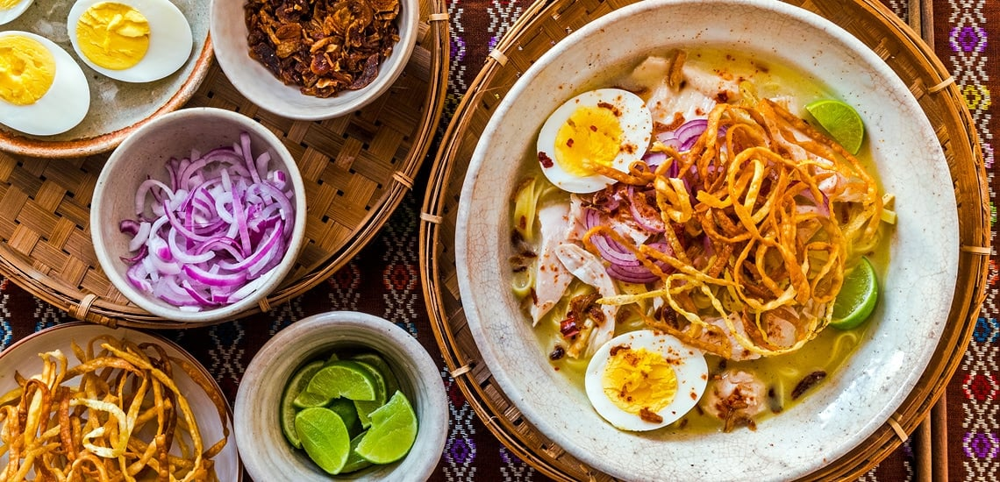

Ohn No Khao Swe (Coconut Noodles)
Home

Description
Creamy coconut-based Burmese noodles often served with chicken and boiled eggs.
Ingredients
200g egg noodles
200ml coconut milk
150g chicken breast, sliced
1 onion, chopped
1 tbsp chickpea flour
2 garlic cloves, minced
1 tsp turmeric
1 tsp fish sauce
Boiled eggs, lime, and coriander for garnish
Directions
Sauté garlic, onion, turmeric in oil; add chicken and cook.
Mix chickpea flour with water and add to pan.
Pour in coconut milk and fish sauce; simmer.
Serve over noodles with boiled eggs and lime wedges.